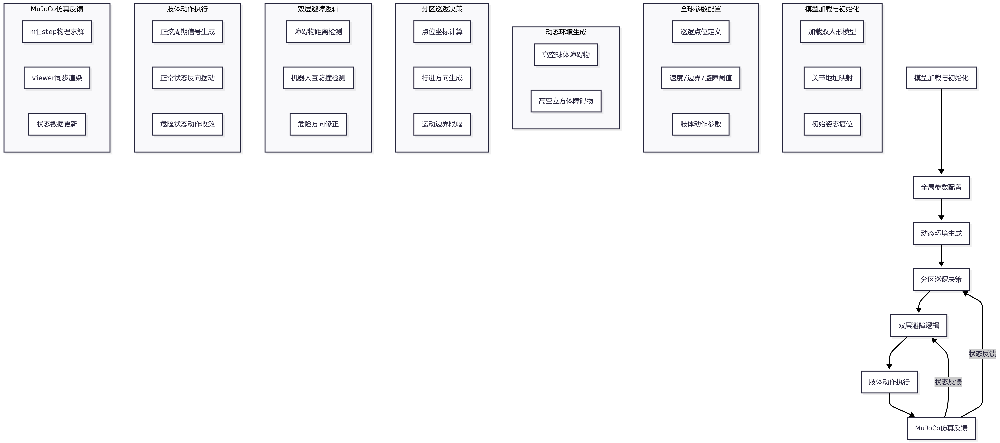
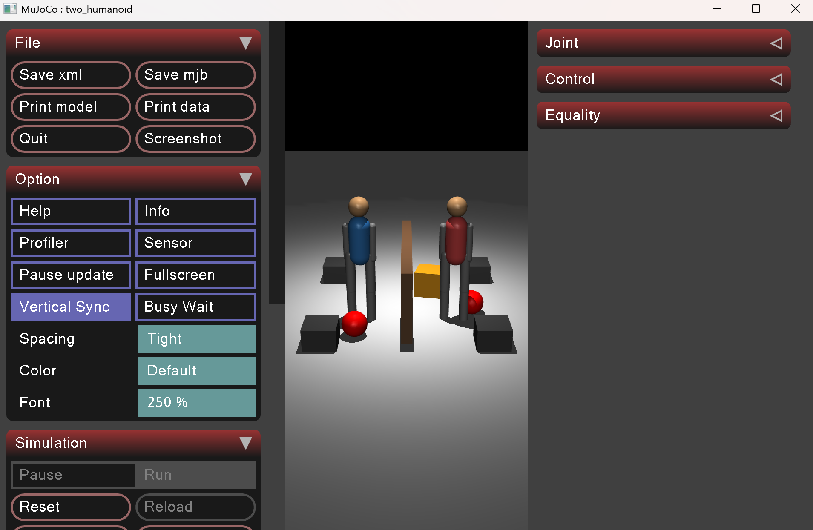
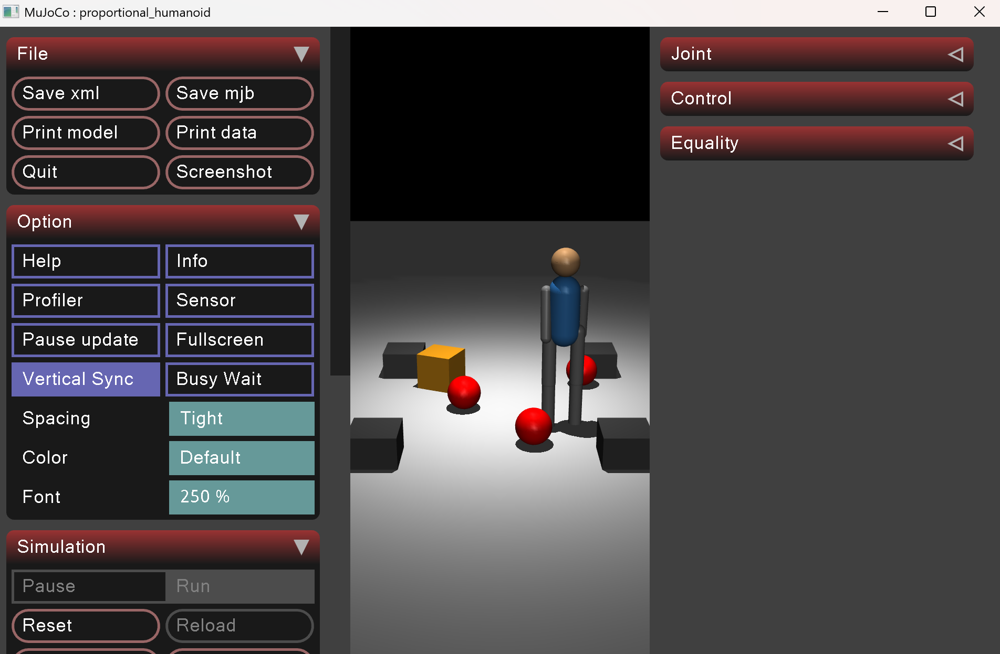

双机器人分区巡逻与动态避障仿真系统（MuJoCo）
1.项目概述
1.1 项目简介
本项目面向双人形机器人协同作业仿真需求，基于 MuJoCo 物理仿真引擎实现分区自主巡逻、高空动态障碍物规避、机器人相互防撞、周期性肢体摆动一体化功能。系统采用点位巡航+距离判定避障+正弦节律肢体动作轻量化控制架构，无需复杂智能算法即可完成多机器人协同行为演示，具备纯本地运行、逻辑清晰、参数易调、可二次扩展等特点。
项目在关节地址映射、运动边界限幅、双层避障逻辑、动态障碍物生成、拟人肢体动作等工程问题上完成落地实现，最终构建一套可运行、可复现、可拓展路径规划与集群算法的多机器人仿真基线系统。
1.2 项目整体流程
该系统形成完整的机器人行为闭环： 模型加载与初始化 → 巡逻点位与参数配置 → 动态障碍物生成 → 分区行进控制 → 双层避障判定 → 肢体动作输出 → 仿真步进与状态反馈
1.3 项目组成
| 模块 | 核心变量/逻辑 | 功能 |
|---|---|---|
| 模型加载模块 | 模型、数据实例 + 关节 qposadr 地址映射 |
加载机器人模型，绑定所有受控关节索引 |
| 参数配置模块 | 运动速度、距离阈值、时间间隔、动作幅度常量 | 统一管理仿真与控制全局参数 |
| 巡逻点位模块 | patrol1、patrol2、点位索引 idx1/idx2 |
划分左右区域，定义循环巡航路径 |
| 障碍物模块 | 定时随机生成球体/立方体 | 模拟高空动态干扰障碍物 |
| 巡逻控制模块 | 方向计算、坐标更新、边界限幅 | 控制机器人沿预设点位自主移动 |
| 避障检测模块 | 欧式距离判定逻辑 | 实现障碍物避让、机器人互防撞 |
| 肢体动作模块 | 正弦周期振荡信号 | 生成手臂、髋关节拟人摆动动作 |
| 仿真主循环 | mj_step + 可视化同步 |
物理求解、画面渲染与闭环运行 |
本项目的核心价值在于：搭建轻量化多机器人行为仿真框架，为集群巡逻、避障、路径规划等算法提供测试平台。
1.4 核心技术特点
| 特点 | 说明 |
|---|---|
| 分区协同巡逻 | 双机器人划分独立区域，沿矩形点位循环巡航，区域互不干涉 |
| 双层避障机制 | 同时检测高空障碍物与邻机间距，双重安全防护 |
| 节律肢体运动 | 基于正弦函数生成周期摆动，还原人形行走姿态 |
| 动态环境模拟 | 定时随机生成高空球体、立方体，构建动态干扰场景 |
| 运动边界约束 | 坐标限幅防止机器人越界，提升系统稳定性 |
| 纯轻量化架构 | 无复杂控制算法，逻辑简单、运行高效、调试便捷 |
1.5 运行环境与使用方式
环境准备
pip install mujoco numpy
运行演示（推荐入口）
python main.py
文件目录说明
./
├── main.py # 仿真主程序
└── humanoid.xml # MuJoCo 人形机器人模型文件（同目录放置）
1.6 项目核心目标
- 可运行性：Windows / Linux 跨平台直接运行，无需额外依赖。
- 分区巡逻：两台机器人在各自区域内稳定完成循环点位巡航。
- 双重避障：实现动态障碍物避让与机器人之间相互防碰撞。
- 拟人动作：常态下肢体周期性摆动，危险状态下动作自适应收敛。
- 可扩展性：保留完整框架接口，支持后续接入路径规划、集群控制、传感器仿真等功能。
2. 项目背景与问题定义
2.1 背景
多移动机器人分区巡逻是集群机器人领域典型应用场景，在安防巡检、区域作业等场景具备实际价值。人形机器人兼具移动底盘与多自由度肢体，除位置移动外，还需要搭配自然肢体动作提升仿真真实性。
MuJoCo 凭借高精度刚体动力学、接触仿真、简洁 Python 接口，成为机器人行为仿真主流平台。传统简易仿真脚本普遍存在关节索引混乱、机器人越界、相互碰撞、姿态僵硬、动态环境缺失等问题。本项目基于 MuJoCo 搭建标准化仿真框架，采用点位巡航+距离避障+关节精准映射方案，构建稳定可用的多机器人巡逻仿真基线。
2.2 现存痛点
- 多机器人联合控制时，关节索引采用固定切片易出现错位；
- 无边界约束，机器人运动范围失控、跑出仿真区域；
- 缺少避障逻辑，机器人易与障碍物、同伴发生碰撞；
- 仅实现点位移动，肢体姿态僵硬，缺乏拟人行走效果；
- 环境静态化，无动态障碍物，仿真场景真实性不足。
基于这些问题，本项目使用 MuJoCo 物理仿真平台，采用定点巡逻+距离避障+周期肢体动作组合方案，逐步优化系统稳定性与仿真效果。
2.3 项目建设目标
- 分区巡航：两台人形机器人在左右独立区域完成稳定循环巡逻。
- 动态避障：对随机出现的高空障碍物进行主动避让。
- 集群防撞：机器人之间保持安全距离，杜绝相互碰撞。
- 拟人运动：实现手臂、髋关节周期性摆动，模拟自然行走姿态。
- 工程稳定性：增加运动限幅、姿态固定、危险动作收敛等机制。
- 功能拓展性：框架模块化设计，便于后续算法迭代与功能新增。
3. 核心技术栈与理论基础
本项目技术栈分为仿真层、控制层、算法层、可视化层四部分。
3.1 核心技术栈
| 技术类别 | 具体选型 | 说明 |
|---|---|---|
| 物理仿真引擎 | MuJoCo 2.3+ | 刚体动力学求解、接触计算、状态更新 |
| 数值计算 | NumPy | 欧式距离、符号判断、数值限幅、三角函数运算 |
| 基础工具库 | Python 3.8+ / random / time / os | 路径读取、随机障碍物生成、计时控制 |
| 开发语言 | Python 3.8+ | 逻辑开发、快速调试、跨平台运行 |
| 机器人模型 | 自定义 XML 人形模型 | 含平移底盘、双臂、双腿多自由度结构 |
上表概括了本项目最核心的开发与运行基础。围绕这些技术，项目进一步形成了 "模型-控制-仿真" 三段式工程闭环。
3.2 仿真层：MuJoCo
MuJoCo（Multi-Joint Dynamics with Contact）是面向机器人控制的物理仿真引擎，支持： - 刚体动力学与接触力建模 - 关节姿态、速度实时读写 - Python API 全流程控制 - 内置可视化 Viewer 实时渲染
在本项目中，MuJoCo 主要承担三个作用： - 加载双人形机器人 XML 模型，解析关节、刚体、几何对象； - 提供机器人坐标、关节姿态、刚体位置等状态反馈； - 执行关节位置指令，完成物理步进与画面刷新。
相关代码位置：
- 模型与数据加载：main() 函数模型初始化段
- 关节地址绑定：main() 内各关节 qposadr 获取代码
- 物理步进：mujoco.mj_step(model, data)
- 可视化渲染：viewer.launch_passive 与 v.sync()
3.3 控制层：关节映射与运动约束
本项目通过关节名称寻址获取 qpos 数组偏移地址，彻底避免固定切片带来的索引错位问题。
r1_slide_x = model.joint("r1_slide_x").qposadr.item()
r1_slide_y = model.joint("r1_slide_y").qposadr.item()
r1_arm_l = model.joint("r1_j_larm").qposadr.item()
r1_arm_r = model.joint("r1_j_rarm").qposadr.item()
r1_hip_l = model.joint("r1_left_hip").qposadr.item()
r1_hip_r = model.joint("r1_right_hip").qposadr.item()
r1_knee_l = model.joint("r1_left_knee").qposadr.item()
r1_knee_r = model.joint("r1_right_knee").qposadr.item()
同时采用 np.clip 对机器人平面坐标做硬约束，限制运动范围：
r1_x = np.clip(r1_x,-MOVE_LIMIT,MOVE_LIMIT)
r1_y = np.clip(r1_y,-MOVE_LIMIT,MOVE_LIMIT)
3.4 控制算法与运动学基础
本项目采用 点位巡航+距离避障+正弦周期肢体动作 分层控制架构，整体分为三层： 高层路径规划 → 中层避障决策 → 底层关节执行，形成完整控制闭环。
3.4.1 分区点位巡航逻辑
为两台机器人划分独立矩形巡逻路径，通过点位索引循环切换目标位置：
# R1 左侧巡逻区域点位
patrol1 = [[-0.75, -0.3], [-0.3, -0.3], [-0.3, 0.3], [-0.75, 0.3]]
# R2 右侧巡逻区域点位
patrol2 = [[0.3, -0.3], [0.75, -0.3], [0.75, 0.3], [0.3, 0.3]]
控制逻辑：根据当前点位与机器人坐标差值，使用 np.sign 获取行进方向，叠加固定步长实现连续移动；到达点位阈值后自动切换下一个巡航点。
3.4.2 欧式距离避障模型
系统两套避障逻辑均基于二维欧式距离判定，距离公式：
-
高空障碍物避障 遍历仿真环境中高空刚体坐标，当障碍物与机器人距离小于检测阈值，立即反向调整行进方向，脱离危险区域。
-
机器人互避障 计算两台机器人平面间距，当小于安全距离时，停止原巡逻方向，沿轴向偏移拉开间距，防止碰撞。
3.4.3 正弦节律肢体摆动
采用正弦函数生成连续周期信号，模拟人形机器人行走时手臂、髋关节自然摆动：
- swing_t：仿真步长累计计数
- swing_k：摆动频率系数
- arm_amp / leg_amp：肢体摆动幅度
正常状态下左右肢体反向摆动；检测到危险时，肢体姿态快速收敛，模拟警惕状态。
3.4.4 动态障碍物生成机制
基于系统时间戳定时刷新障碍物，实现动态环境效果： - 设定球体、立方体各自刷新时间间隔； - 到达间隔后随机生成 XY 坐标，固定高度放置高空障碍物； - 重置障碍物速度，保证初始静止状态。
3.5 工程化机制
初始姿态固化
仿真启动时统一复位机器人坐标、腿部姿态与全身速度，保证初始状态稳定直立：
data.qpos[r1_slide_x] = r1_x
data.qpos[r1_slide_y] = r1_y
data.qpos[r1_knee_l] = STAND_KNEE
data.qpos[r1_knee_r] = STAND_KNEE
data.qvel[:] = 0
危险姿态自适应收敛
机器人检测到障碍物或同伴靠近时，肢体摆动幅度衰减，动作趋于稳健：
if not danger1:
data.qpos[r1_arm_l]=arm_amp*s;data.qpos[r1_arm_r]=-arm_amp*s
data.qpos[r1_hip_l]=leg_amp*s;data.qpos[r1_hip_r]=-leg_amp*s
else:
data.qpos[r1_arm_l:r1_arm_r+1]*=0.92
data.qpos[r1_hip_l:r1_hip_r+1]*=0.92
3.6 核心参数说明
| 参数 | 数值 | 作用 |
|---|---|---|
| STAND_KNEE | 0.0 | 膝盖直立角度，保持稳定站姿 |
| MOVE_LIMIT | 0.85 | 机器人平面最大运动边界 |
| MOVE_SPEED | 0.0001 | 正常巡逻行进步长 |
| DANGER_Z | 0.35 | 高空障碍物高度判定阈值 |
| DETECT_RANGE | 0.7 | 障碍物有效检测距离 |
| ROBOT_SAFE_DIST | 0.42 | 机器人之间最小安全间距 |
| ESCAPE_SPEED | 0.00035 | 相互避让移动速度 |
| BALL_INTERVAL | 3.5 | 球形障碍物刷新周期(秒) |
| CUBE_INTERVAL | 4.2 | 立方体障碍物刷新周期(秒) |
| arm_amp / leg_amp | 0.45 / 0.11 | 手臂、髋关节摆动幅度 |
4. 系统整体架构
图 1 双机器人巡逻控制整体架构图

本系统控制闭环包含模型加载层、参数配置层、动态环境层、巡逻决策层、避障逻辑层、肢体执行层、MuJoCo 仿真反馈层七大模块，形成完整的路径决策-避障-动作执行-仿真反馈闭环。
5 系统优化
5.1 优化一：关节名称寻址，消除索引错位
原始方案使用固定下标切片读取关节状态，模型修改后极易控制错乱。本项目改用关节名称+qposadr寻址：
joint_addr = model.joint("joint_name").qposadr.item()
优化作用： - 关节地址与模型强绑定，修改 XML 模型无需改动索引代码； - 彻底解决关节控制错位、动作发散问题。
5.2 优化二：运动边界硬限幅，防止区域越界
增加坐标限幅逻辑，约束机器人活动范围：
r1_x = np.clip(r1_x,-MOVE_LIMIT,MOVE_LIMIT)
r1_y = np.clip(r1_y,-MOVE_LIMIT,MOVE_LIMIT)
优化作用： - 限制机器人在指定区域内活动； - 避免跑出仿真可视范围，提升场景完整性。
5.3 优化三：分区路径解耦，实现独立巡航
将两台机器人巡逻路径划分为左右互不重叠区域，点位数组独立配置。 优化作用： - 天然减少机器人相遇概率； - 巡逻逻辑互不干扰，运行更稳定。
5.4 优化四：双层避障逻辑，提升运行鲁棒性
同时增加高空障碍物避障与机器人互防撞两套逻辑，分层判定危险。 优化作用： - 应对动态环境干扰与集群内部碰撞两类风险； - 多场景下均可稳定运行。
5.5 优化五：肢体动作状态自适应
区分正常巡逻与危险状态，危险时自动衰减摆动幅度。 优化作用： - 行为逻辑更拟人； - 危险状态下肢体姿态更稳定，减少抖动。
5.6 优化六：定时动态障碍物，丰富仿真场景
基于时间戳定时随机生成球体、立方体障碍物。 优化作用： - 构建动态非结构化环境； - 提升仿真场景真实性与算法测试价值。
5.7 优化七：初始姿态统一复位
仿真启动时清零速度、固定膝盖角度、初始化坐标。 优化作用： - 保证每次启动初始状态一致，可复现性强； - 避免开局姿态异常、倾倒问题。
6. 核心技术难点与解决历程
6.1 关节索引错位导致动作异常
- 问题本质：MuJoCo 关节在
qpos数组中排布由 XML 模型决定，固定切片下标不具备通用性。 - 解决方案：通过
model.joint(name).qposadr获取每个关节独立偏移地址，按名称寻址控制。
6.2 机器人运动越界问题
- 问题本质：持续累加位移后，坐标不受约束，机器人跑出仿真区域。
- 解决方案：使用
np.clip对 XY 坐标做上下限约束，划定有效活动区域。
6.3 机器人与障碍物、同伴频繁碰撞
- 问题本质：无距离检测逻辑，机器人按固定路径行进，无法感知周边危险。
- 解决方案：引入欧式距离判定，设置多级阈值，触发后反向修正行进方向。
6.4 肢体姿态僵硬，仿真效果差
- 问题本质：仅控制底盘移动，四肢无动作，拟人度低。
- 解决方案：引入正弦周期信号驱动手臂、髋关节做往复摆动，危险状态下自适应收敛。
7. 系统运行效果
7.1 运行环境配置
| 类别 | 配置 |
|---|---|
| 系统 | Windows 11 / Ubuntu 20.04 |
| 仿真 | MuJoCo 2.3+ |
| 依赖 | Python3.8、NumPy、random、time |
7.2 交互与运行说明
- 程序启动后自动加载模型，两台机器人分别在左右区域开始循环巡逻；
- 系统定时在高空随机生成球体、立方体障碍物；
- 机器人检测到障碍物或同伴距离过近时自动避让；
- 常态下手臂与髋关节持续周期性摆动；
- 检测到危险时肢体摆动幅度减小，姿态趋于稳定；
- 关闭可视化窗口即可终止程序。
7.3 运行结果图片
图 2 双机器人分区巡逻常态效果

图 3 机器人动态避障运行效果

8. 现存不足与后续优化方向
8.1 现存不足
- 巡逻策略简单：仅支持固定点位巡航，不支持动态路径规划、目标点变更；
- 避障策略单一：仅支持反向避让，无绕行、减速、原地等待等复杂行为；
- 动作参数固定：肢体摆动频率、幅度全程不变，无法随运动状态自适应调整；
- 无状态机管理：巡逻、避障、停止等行为逻辑耦合，不利于功能拆分；
- 无虚拟传感器：基于全局坐标判定环境，未模拟激光、视觉等真实机载传感器。
8.2 后续优化方向
- 引入智能路径规划：接入 A*、Dijkstra 算法，实现任意目标点自主路径规划。
- 丰富避障策略库：区分静态/动态障碍物，实现绕行、减速、悬停多级避障逻辑。
- 步态算法融合：参考 CPG 振荡器思路，替换纯正弦摆动，实现可控仿生步态。
- 增加有限状态机：划分巡逻、避障、暂停、紧急停止状态，解耦业务逻辑。
- 虚拟传感器仿真：添加激光雷达、深度相机模型，基于局部感知完成避障，贴近实体机器人。
- 集群协同拓展：增加队形控制、任务分配，拓展至多机器人集群编队作业场景。
9. 总结
本项目基于 MuJoCo 仿真引擎，搭建了双人形机器人分区巡逻与动态避障完整仿真系统。项目采用点位巡航+距离避障+周期肢体动作轻量化架构，解决了关节索引错位、机器人越界、相互碰撞、姿态僵硬等工程问题，实现分区自主巡逻、动态障碍避让、集群防碰撞、拟人肢体运动等核心功能。
系统模块化程度高、参数配置清晰、跨平台运行稳定，既可作为多机器人基础行为仿真教学案例，也可在此框架上拓展路径规划、仿生步态、集群控制、传感器仿真等高级功能，为后续机器人算法研究与实体部署提供可靠的仿真测试基线。
项目代码位置：main.py
模型文件位置：humanoid.xml
参考文献
[1] Todorov E, Erez T, Tassa Y. MuJoCo: A physics engine for model-based control[C]//2012 IEEE/RSJ International Conference on Intelligent Robots and Systems. IEEE, 2012: 5026-5033. [2] 王浩, 张磊. 多移动机器人分区巡逻与避障算法研究[J]. 机械设计与制造, 2020. [3] 刘成举。基于自学习 CPG 的仿人机器人自适应行走控制 [J]. 自动化学报，2021, 47 (8): 1652-1661.